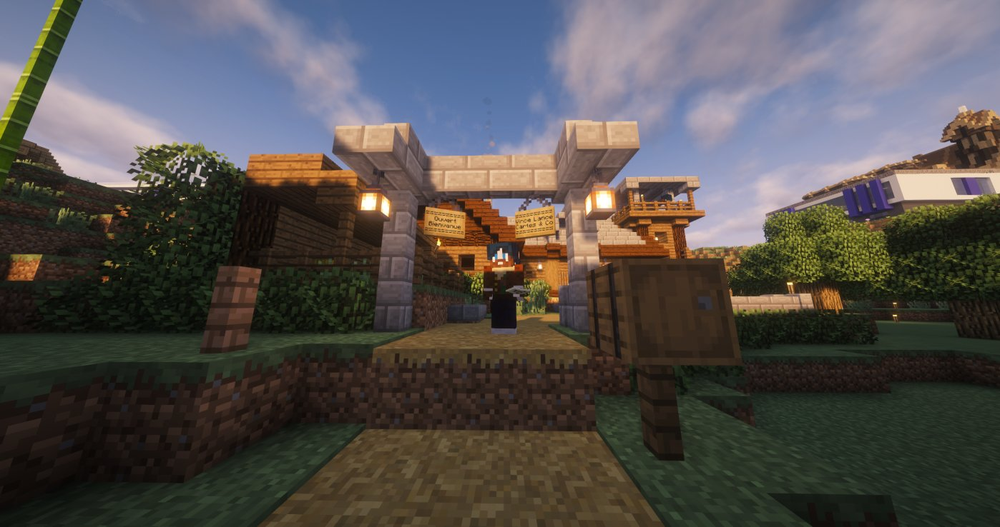
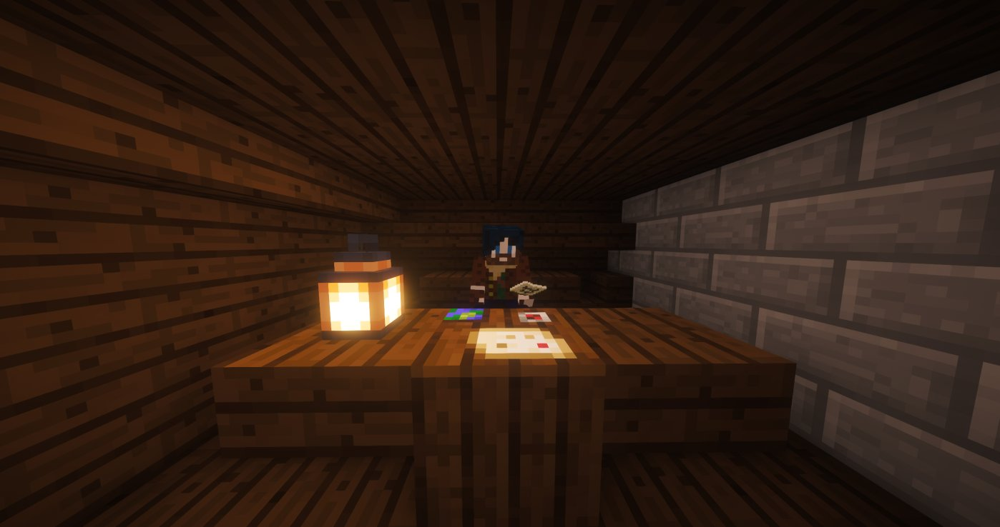
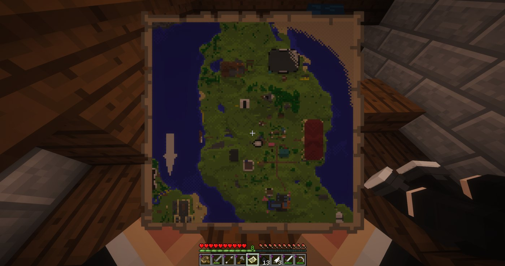

Cartes & Co : le nouveau cartographe qui va vous faire voir le monde autrement
Ancien cartographe de l'Ancien Monde, Vince Lance pose ses valises dans notre Nouveau Monde — avec son talent, ses cartes et un relai de voyageurs.

Il y a des histoires qui commencent par une rupture et finissent par une renaissance. Celle de Vince Lance en est la parfaite illustration. Ancien cartographe de l'Ancien Monde, cet homme au regard curieux a tout abandonné derrière lui pour poser ses valises dans notre Nouveau Monde — et il n'est pas venu les mains vides.
Un homme, une mission
Dans l'Ancien Monde, Vince n'avait jamais eu la chance d'explorer, de découvrir, de tracer de nouvelles routes. Ici, tout est possible. Armé de son savoir-faire et d'une plume précise, il met désormais son talent au service de la communauté au sein de son établissement : Cartes & Co.
Et en parallèle, fidèle à son sens légendaire de l'hospitalité, il tient également un relai de voyageurs pour que chacun puisse passer un bon moment et s'éclater en bonne compagnie.

Les services de Cartes & Co
Vince propose une gamme simple, efficace et accessible :
| Prestation | Détail | Prix |
|---|---|---|
| Petite carte | Zone, domaine ou propriété | 200 KCoins |
| Grande carte | Grands territoires ou propriétés étendues | 300–350 KCoins |
| Installation | Déplacement et pose sur place | Gratuit |
Les prix sont négociables — Vince est à l'écoute.
Comment le contacter ?
Deux options s'offrent à vous :
🐦 Sur Twitter : @Mahyste
🍺 En personne : Rendez-vous directement à la taverne du Cartes & Co pour le rencontrer autour d'un verre !

"Un monde sans cartes, c'est un monde sans avenir. Merci, Vince."
— La Rédaction
Le Karmine Déchaîné souhaite la bienvenue à Vince Lance dans notre communauté et lui souhaite plein succès dans cette nouvelle aventure. Que vos cartes guident les explorateurs d'aujourd'hui vers les légendes de demain.